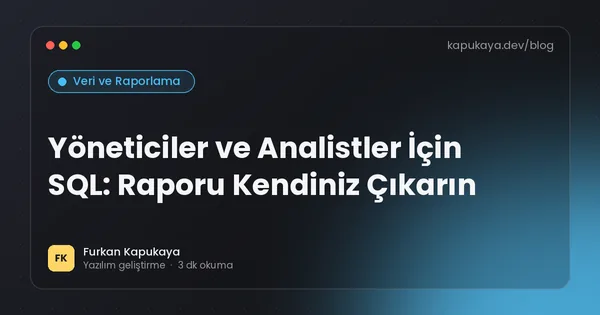
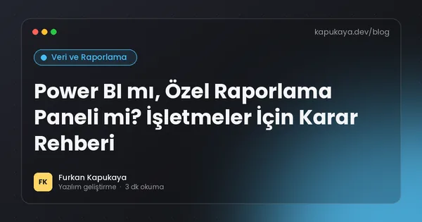
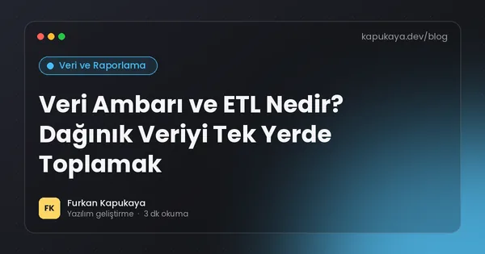
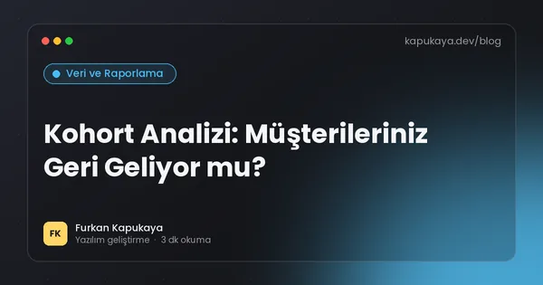
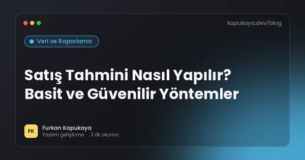
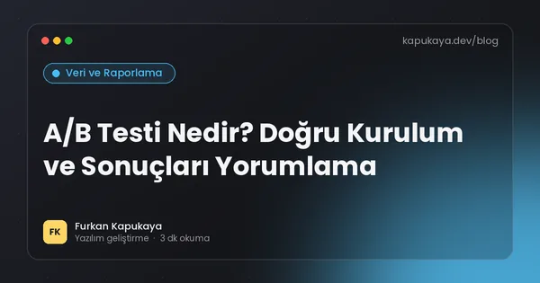

Veri ve Raporlama
KPI, raporlama, veri temizliği, analiz yöntemleri ve veriye dayalı karar verme; Excel’den SQL’e, gösterge panelinden tahmine.
Bu konuda okuma yolları:Veriyle karar vermek6 yazıMüşteriyi veriyle tanımak6 yazı
12 yazı

Veriye Dayalı Karar Verme: Sezgiden Ölçüme Geçiş Rehberi
İşletmelerde veriye dayalı karar kültürünün nasıl kurulacağı; doğru soruyu sormak, veri kaynaklarını belirlemek, ölçüm hataları, korelasyon ve nedensellik farkı ve küçük adımlarla başlama.
Yazıyı oku
KPI Nedir? İşletmeler İçin Doğru Performans Göstergelerini Seçmek
Anahtar performans göstergelerinin (KPI) tanımı, iyi bir KPI'ın özellikleri, öncü ve gecikmeli göstergeler, sektörlere göre örnek KPI'lar ve KPI takibinde sık yapılan hatalar.
Yazıyı oku
Veri Temizliği: Kirli Veriyle Doğru Karar Verilmez
Mükerrer kayıtlar, tutarsız yazımlar, eksik alanlar ve hatalı formatlar gibi kirli veri sorunları; veri temizleme adımları, doğrulama kuralları ve verinin baştan temiz girilmesini sağlayan yöntemler.
Yazıyı oku
Excel Pivot Tablo Rehberi: Dakikalar İçinde Özet Rapor Hazırlamak
Excel pivot tablonun ne işe yaradığı, verinin pivot için nasıl hazırlanacağı, satır, sütun, değer ve filtre alanları, gruplama, dilimleyiciler ve pivot tabloların sınırları.
Yazıyı oku
Veri Görselleştirme: Doğru Grafik Nasıl Seçilir?
Hangi veri için hangi grafiğin kullanılacağı; çubuk, çizgi, pasta, dağılım ve tablo seçimi, yanıltıcı grafiklerden kaçınma, renk kullanımı ve yönetici raporlarında görselleştirme ilkeleri.
Yazıyı oku
Yöneticiler ve Analistler İçin SQL: Raporu Kendiniz Çıkarın
Teknik olmayan çalışanlar için SQL'in temelleri; SELECT, WHERE, ORDER BY, GROUP BY, JOIN ve tarih filtreleri ile örnek iş soruları, güvenli çalışma için salt okunur erişim önerileri.
Yazıyı oku
Power BI mı, Özel Raporlama Paneli mi? İşletmeler İçin Karar Rehberi
Power BI ve benzeri iş zekâsı araçları ile işletmeye özel geliştirilen raporlama panellerinin karşılaştırması; maliyet, esneklik, veri kaynakları, yetkilendirme ve hangi durumda hangisinin seçileceği.
Yazıyı oku
Veri Ambarı ve ETL Nedir? Dağınık Veriyi Tek Yerde Toplamak
Veri ambarının ne olduğu, operasyonel veritabanından farkı, ETL ve ELT süreçleri, artımlı yükleme, yıldız şema ve küçük işletmeler için hafif bir raporlama veritabanı yaklaşımı.
Yazıyı oku
RFM Analizi ile Müşteri Segmentasyonu: En Değerli Müşterilerinizi Bulun
RFM analizinin (yenilik, sıklık, parasal değer) mantığı, puanlama yöntemi, şampiyonlar ve kaybedilmek üzere olan müşteriler gibi segmentler, her segment için aksiyon önerileri ve uygulama adımları.
Yazıyı oku
Kohort Analizi: Müşterileriniz Geri Geliyor mu?
Kohort analizinin ne olduğu, müşteri elde tutma (retention) tablosunun nasıl okunduğu, e-ticaret ve abonelik işlerinde kullanımı ve toplam rakamların gizlediği sorunları ortaya çıkarma.
Yazıyı oku
Satış Tahmini Nasıl Yapılır? Basit ve Güvenilir Yöntemler
İşletmeler için satış tahmininin önemi; hareketli ortalama, mevsimsellik, geçen yıl karşılaştırması, satış hunisi tabanlı tahmin, tahmin hatasının ölçülmesi ve stok planlamasında kullanımı.
Yazıyı oku
A/B Testi Nedir? Doğru Kurulum ve Sonuçları Yorumlama
A/B testinin mantığı, hipotez kurma, örneklem büyüklüğü, test süresi, istatistiksel anlamlılık, sık yapılan hatalar ve web sitesi, e-posta ve fiyatlandırma için test fikirleri.
Yazıyı oku
Aramanızla eşleşen yazı bulunamadı. Farklı bir kelime deneyin veya tüm yazıları gösterin.